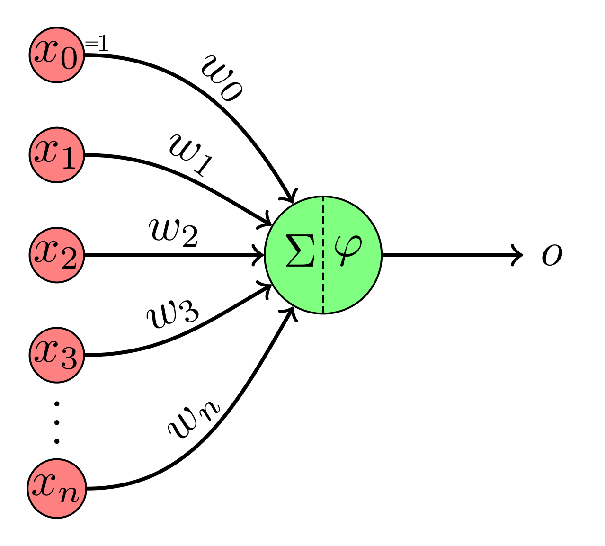
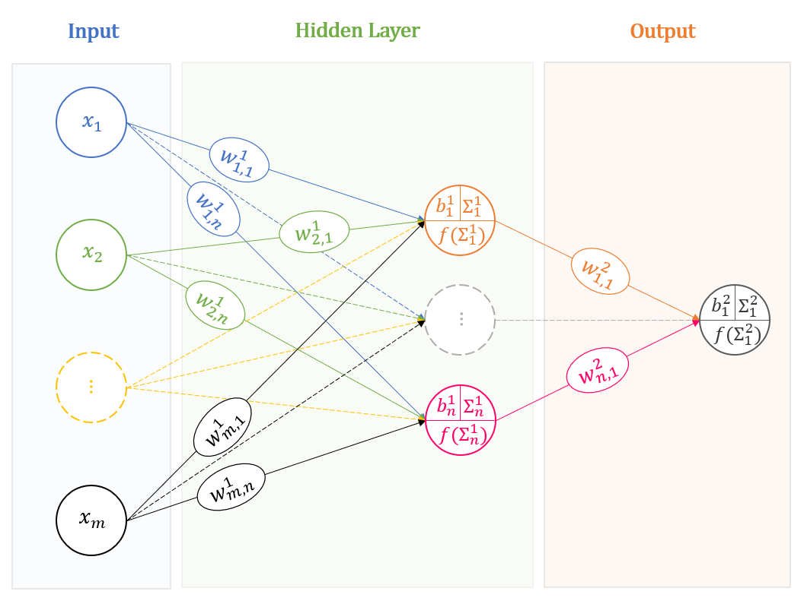

Welcome to Week 2 of my Deep Learning in Biology self-study series! In today’s post, I’ll dive into the core building blocks of deep learning: how neural networks work, how they’re trained, and the modern architectures driving today’s AI systems, particularly in biomedical contexts.
Neural Network Basics
At the heart of deep learning are neural networks, composed of layers of interconnected units (also known as neurons). Each connection has an associated weight that determines the strength of influence one neuron has on the next. These weights are learnable parameters adjusted during training.
Each neuron also has a bias, which shifts the input to the activation function. Biases help the model better fit data by offsetting the activation threshold—just like an intercept in linear regression.
To introduce non-linearity, we make use of activation functions. These allow networks to approximate complex, real-world relationships:
Sigmoid: Outputs between 0 and 1; good for binary classification.
Tanh: Outputs between -1 and 1; zero-centered and better for deep networks.
ReLU: Efficient and widely used; outputs positive values only.
Softmax: Used for multi-class classification; outputs probabilities that sum to 1.
Forward & Backpropagation
Training a neural network involves two primary steps:
Forward Propagation
Inputs pass through the network layer by layer until predictions are made.Backpropagation
Errors from the output are propagated backward to update the weights. Gradients are computed using the chain rule, guiding the model to minimize its loss function.
This cycle repeats over many epochs (passes through the training data), gradually refining the model.
Key Deep Learning Model Architectures
Modern deep learning uses specialized architectures, each tailored to specific data types and tasks. We will go more in depth into these subtypes of deep learning models in the coming weeks:
1. Convolutional Neural Networks (CNNs)
Use case: Image data
Components:
Convolutional layers extract spatial features.
Pooling layers reduce dimensionality.
Fully connected layers make predictions.
Biomedical applications: Diagnostic imaging, tumor segmentation
Example models: LeNet-5, AlexNet, VGGNet
2. Recurrent Neural Networks (RNNs)
Use case: Sequential data (e.g., EHRs, time-series)
Feature: Loops that “remember” prior inputs
Variants: LSTM, GRU—solve vanishing gradient issues
Biomedical applications: Monitoring vitals over time, clinical event prediction
3. U-Net
Use case: Image segmentation
Architecture: U-shaped with encoder-decoder paths and skip connections
Variants: 2D/3D U-Net, Attention U-Net
Biomedical applications: Organ delineation, lesion detection
4. Autoencoders
Use case: Unsupervised feature learning, dimensionality reduction
Structure: Encoder compresses, decoder reconstructs
Variants: Standard AE, Variational AE (VAE)
Biomedical applications: Denoising images, detecting anomalies
5. Graph Neural Networks (GNNs)
Use case: Graph-structured data (networks)
Structure: Nodes, edges, graph convolutions
Variants: GCN, GAT, GRN, Graph Autoencoder
Biomedical applications: Drug discovery, gene interaction networks
6. Generative Adversarial Networks (GANs)
Use case: Data generation
Mechanism: Two networks (Generator vs. Discriminator) in a game-like setup
Variants: DCGAN, CycleGAN, Pix2Pix
Biomedical applications: Synthesizing high-resolution medical images, augmenting datasets
7. Transformers
Use case: Sequence modeling without recurrence
Core idea: Self-attention mechanisms
Variants: BERT, AlphaFold
Biomedical applications: Protein folding, DNA sequence analysis
8. Deep Reinforcement Learning (DRL)
Use case: Decision-making in dynamic environments
Key concepts: Agent, environment, reward, policy, value function
Example algorithms: DQN, PPO, A3C, SAC
Applications: Robotics, autonomous surgery, adaptive diagnostics
Perceptrons & Multilayer Perceptrons (MLPs)
Before we go into some of the “deeper” forms of DL, let’s start with the basics. The Perceptron is the simplest form of a neural network: A perceptron takes multiple inputs, applies weights, adds bias, and produces a binary output. Perceptrons also make use of a step activation function (a binary deactivate / activate) to determine the final output.

Multilayer Perceptrons (MLPs) expand on the perceptron model - MLPs contain multiple layers, including an input layer, hidden layer(s), and an output layer. MLPs are capable of learning non-linear patterns in the data using their multiple hidden layers, and we can specify different types of MLPs using the following hyperparameters: width (number of units per layer), depth (number of hidden layers), and capacity (total number of learnable parameters).

The Universal Approximation Theorem:
The universal approximation theorem states that a neural network with enough width or depth can approximate any continuous function. However, when considering the structure of a neural network, it is important to remember the tradeoffs between width and depth:
Wider networks are simpler but more inefficient
Deeper networks are more compact but harder to train
Activation Functions
Activation functions are added to the end of each perceptron to introduce non-linearity into the produced output. Different activation functions serve different purposes. In binary classification, we would introduce a sigmoid activation function in the output layer to convert the output to a 0-1 value. For multi-class classification, this activation function would become a softmax, letting us convert the output to one of multiple categories. And for a regression, the activation function can simply be a linear function, returning the output of the neural network scaled to an appropriate value. For intermediate hidden layers, rectified linear units (ReLUs) can generate output if the input is positive and return zeroes for any negative inputs. Alternatively, Tanh activation functions can be used if the data are centered, shifting output to a value between -1 and 1.
Loss Functions
Loss functions are used to quantify the difference between predictions and true labels. Different types of loss functions can apply different constraints and transformations to the data, allowing us to manipulate the behavior of the model to forms that we find most pertinent.
For regression:
MSE penalizes large errors more, but is sensitive to outliers.
MAE institutes an equal penalty for all errors (even if they are large), but is more robust to outliers.
Huber Loss is a hybrid of MSE and MAE, allowing for robustness against large errors and outliers.
For classification:
Binary Cross-Entropy is used for binary tasks, while Cross-Entropy is effective for multi-class tasks.
KL Divergence measures the divergence between two distributions, and is used in architectures such as Variational Autoencoders (VAEs)
Negative Log Likelihood (NLL) can be used with log-softmax outputs
As a special case, Dice Loss is effective for segmentation tasks with imbalanced classes
Optimization Algorithms
In addition to selecting the appropriate loss function to maximize the utility of mdel training, an effective optimization algorithm should be chosen as well to improve model training. One of the most basic forms of model optimization is stochastic gradient descent (SGD) - however, this approach can be noisy and slow. Concepts like momentum and adaptive learning rates can be introduced to reduce oscillations around local loss minima - for instance, the Adaptive Moment Estimation (Adam) optimizer combines the advantages of multiple optimization algorithms to adjust learning rates during training.

Even with advances in optimization algorithms, a variety of challenges remain. Vanishing gradients occur when the derivatives of the activation functions become close to zero during backpropagation, hindering effective training and weight updates. This issue can arise for many deep neural networks, and it is particularly associated with the sigmoid and tanh activation functions that have smaller ranges of derivatives.
Exploding gradients represent the reverse problem, when gradients of the network’s loss function become excessively large with respect to the weights of the model - this outcome is more tied to the weights of the network than the choice of activation function, with high weights leading to large derivatives. As a result, gradients fail to converge, leading to networks oscillating around local minima.
Solutions for these issues include batch normalization, where the activations are normalized within each mini batch of data, effectively scaling gradients and reducing variance. Gradient clipping can also impose a threshold on the gradients during backpropagation, preventing them from becoming too small or exploding. Other activation functions (e.g. ReLUs) and other types of networks (ResNets, LSTMs, and GRUs) can address the vanishing gradient problem by skipping certain layers during backpropagation or incorporating gating mechanisms.
Final Thoughts
Deep learning is a powerful tool for the analysis of multidimensional, complex data. Understanding the basics of how neural networks work, how they’re trained, and when to use different architectures is crucial for building practical and effective models, especially in high-stakes domains like the field of biomedicine.